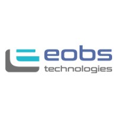
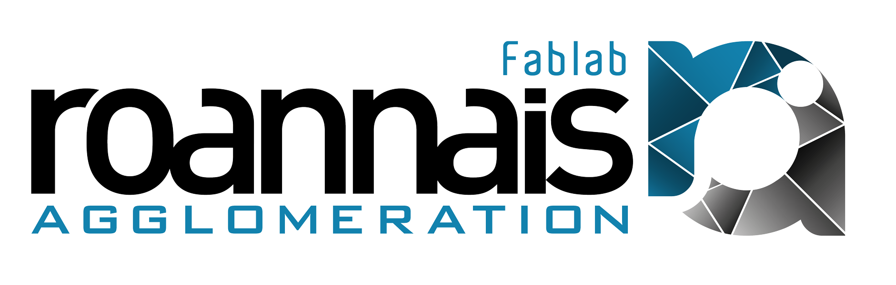
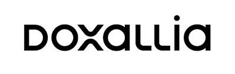
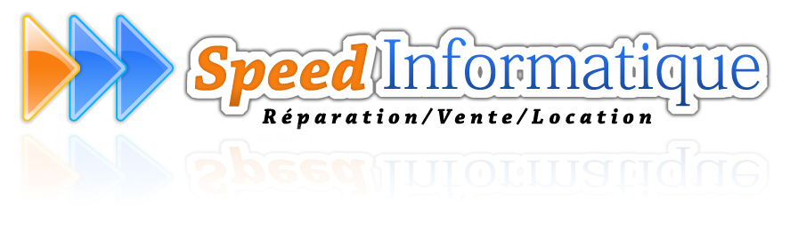

BTS SIO - option SISR
Le BTS SIO option SISR forme à l’administration des réseaux, des systèmes et à la cybersécurité.
· Étudiante en BTS SIO spécialisée SISR - Solutions d'Infrastructures, Systèmes et Réseaux.
Je suis une étudiante passionnée, en BTS SIO avec une spécialisation en SISR, au Lycée Albert Londres situé à Cusset.
Ma formation me permet d'acquérir des compétences techniques solides dans la conception, le déploiement et la maintenance d'infrastructures informatiques.
Objectif: Administratrice systèmes et réseaux en gendarmerie
Le BTS Services informatiques aux organisations est un diplôme BAC +2, qui apprend à exploiter des données, dispense les bases de la programmation et du développement d'applications, et apporte des enseignements sur le fonctionnement d'une entreprise.
Solutions d’Infrastructure, Systèmes et Réseaux
Solutions Logicielles et Applications Métiers
Le BTS SIO option SISR forme à l’administration des réseaux, des systèmes et à la cybersécurité.
Obtention du Baccalauréat professionnel, mention Bien. C'est grâce à ce Bac Pro que j'ai découvert ma passion pour le réseau, la cybersécurité et les machines.
Obtention du brevet des collèges avec mention Bien. J'ai pu effectuer un mini-stage lors d'une demi-journée à la Cité scolaire Carnot pour découvrir la filière.
🔏 Cybersécurité 🔏
⚡ Réseaux ⚡
💻 Systèmes 💻
🛠️ Outils et Protocoles 🛠️
💪 Travail d’équipe 💪
2022 - 2023 • Roanne
Stage en entreprise spécialisée dans la fabrication de pneumatiques.
2023 • Roanne

Stage dans une entreprise spécialisée dans le développement web.
2024 • Roanne

Participation à des ateliers de fabrication numérique et prototypage.
2024 • Saint-Étienne

Stage dans une entreprise spécialisée en solutions digitales.
2025 • Renaison

Stage dans une entreprise de dépannage et maintenance informatique.